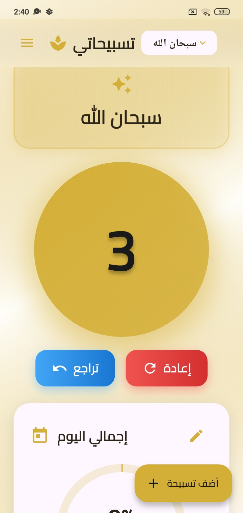
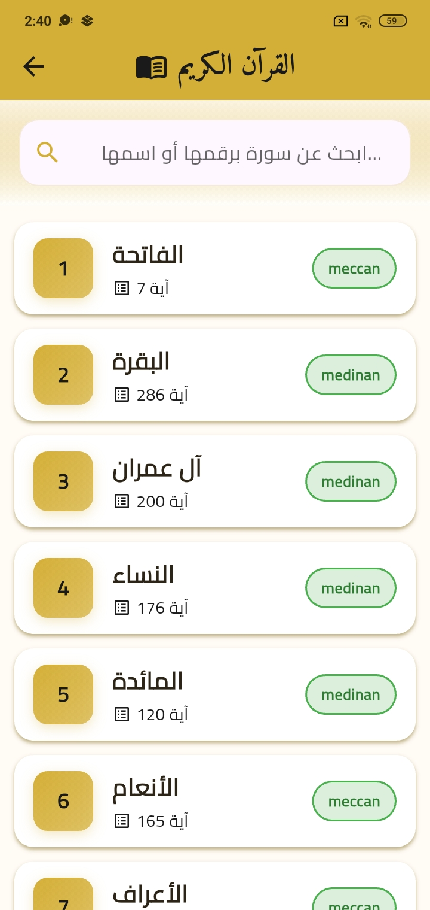
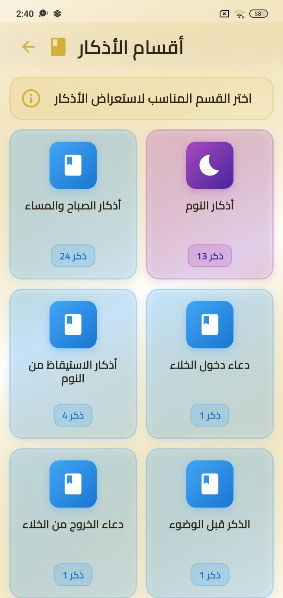

افهم الفشل.
أبدأ بإعادة إنتاج المشكلة وتحديد السبب الفعلي قبل كتابة الحل.
أنا عبد الرحمن درويش (NemesisDevX). أبني تطبيقات Flutter، وواجهات API، وأساهم في إصلاح أدوات المطورين. لديّ 8 مساهمات مُدمجة رسميًا في Flutter وDart-Code وأدوات مفتوحة المصدر تديرها Apple — مع الكود والمراجعات كدليل، وليس مجرد شعارات.
مش مجرد واجهات تخيلية: صور حقيقية من تطبيق Android، وسجل نشر يمكن التحقق منه.
تطبيق Flutter منشور على Google Play للقرآن والتسبيح والأذكار ومواقيت الصلاة، مع Firebase وإشعارات ودعم عربي. اشتغلت على تطويره ونشره ومعالجة أعطال الإنتاج.
الصور من نسخة أكتوبر 2025 المحفوظة بالمستودع. قد تختلف عن الإصدار الحالي.



تريد تعرف عني أسرع؟
سيرة ذاتية من صفحة واحدة، وروابط 8 مساهمات مدموجة موثّقة.
إصلاح بيانات قيمة شريط التمرير عند إعادة تفعيله، مع اختبار تراجع ومراجعة من مساهمين بالمشروع الأصلي.
عزل تشغيل أوامر Dart وFlutter الحقيقية بمحاكيات حتمية. انخفض زمن مجموعة اختبارات مستهدفة من نحو 24 إلى 3 ثوانٍ محليًا.
تطبيق Flutter أندرويد للقرآن والأذكار ومواقيت الصلاة، مع Firebase وصيانة وإصلاحات إنتاجية.
تطبيق Flutter وواجهة Laravel لإدارة الحسابات والعائلات والتنبيهات والتقارير في تجربة عميل خاصة؛ ليس إطلاقًا عامًا.
في Dart-Code #6373، عزلت الاختبارات تشغيل أدوات Dart وFlutter الحقيقية، مع التحقق من المخرجات والاحتفاظ بالتغطية المطلوبة. بعد معالجة تعليقات المراجعة، وافق DanTup ودُمج الطلب في 7 نوفمبر 2026.
شاهد سجل المراجعة ↗زمن مجموعة اختبارات Flutter مستهدفة
نتائج محلية تقريبية؛ ليست قياسًا لكل اختبارات المستودع. لم تتغير الادعاءات بشأن الدمج.
أبدأ بإعادة إنتاج المشكلة وتحديد السبب الفعلي قبل كتابة الحل.
أصلح المسار الصحيح واكتب اختبارات تساعد المراجع على التأكد من السلوك.
أشغّل الاختبارات وأعالج ملاحظات المراجعة وأفرق بين النجاح والدمج الفعلي.
متاح لأدوار Flutter وDart عن بُعد، وأعمال أدوات المطورين وواجهات API والعقود الهندسية.